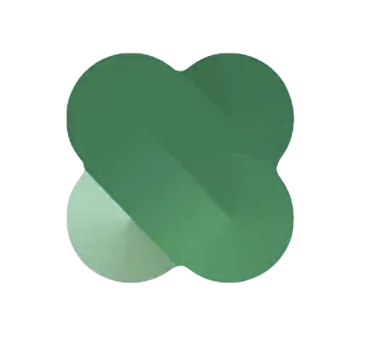

Q. 운영진 모집에 있어 우대하는 학과가 있나요?
아니요! 이화이언 운영진에는 다양한 전공의 벗들이 속해 있어, 이화이언을 사랑하는 마음과 열정으로 충분히 운영진 활동을 펼쳐나갈 수 있답니다!

아니요! 이화이언 운영진에는 다양한 전공의 벗들이 속해 있어, 이화이언을 사랑하는 마음과 열정으로 충분히 운영진 활동을 펼쳐나갈 수 있답니다!
네, 지원서 제출 기한 전까지는 지원하기 페이지에서 기존 지원자를 선택하시면 해당 페이지에서 수정이 가능합니다.
이화이언에 대한 애정과 열정이 제일 중요하겠지만, 학번에 상관 없이 최소 3학기 활동이 가능해야 합니다.